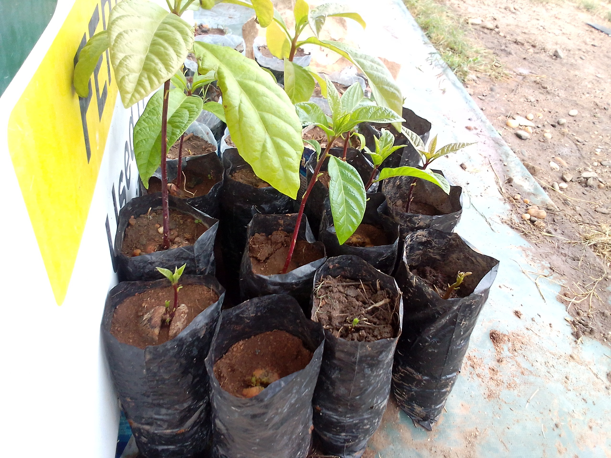

1.Meditation and near-to-death exeperiences
2.Citrus budding, orange seedling as a rootstock and lemon bud as a scion.
Meditation and near-to-death exeperiences
Near-death experiences (NDEs) are experiences commonly occurring in life-threatening conditions. They include feeling a sense of peace, of seeing a bright light and of transcending space and time. Near to death experiences are closely linked with meditation. Meditation is the practice of thinking deeply or focusing one's mind for a period of time. This can be done in silence or with the help of chanting, and is done for a number of reasons, starting from religious or spiritual purposes to a method for evoking relaxation.
To explain them, near to death experiences has been suggested that they stem from psychological reactions to nearing death, a sort of wishful thinking in response to the perceived threat. Through meditation one can achieve near to death experiences where one sees themselves in a tunnel of unending bright light which is sometimes thought to occur when one is transforming from mortal to imortal.
Citrus budding, orange seedling as a rootstock and lemon bud as a scion.
A commercial citrus tree usually consists of two parts: the scion and the rootstock. The scion is the above-ground portion while the rootstock, is lower portion of the tree. Rootstocks are usually grown right from seeds, but can also be grown from cuttings or tissue culture depending on the method of propagation. The scion is joined to the rootstock through a process known as grafting, or budding, which is shown in the picture below. So by using different cultivars for rootstock and scion, more desirable features can be incorporated into one single plant. see more
 rick images/horticulture and art.The main advantages of budding and grafting is that it reduces the maturity period of a plant and improves plants resistance to diseases and drought.
There are different types of budding, which include: inverted T bud and the chip bud. Budwood for budding the desired scion cultivar to the rootstock is obtained from healthy disease-free budwood mother plant. Usually Budding can be done anytime the rootstock is in active growth and the bark separates easily from the wood underneath, It is important to keep the stock plants well-watered and fertilized before budding. The area to be budded is pruned clean of thorns and twigs before the process of budding.